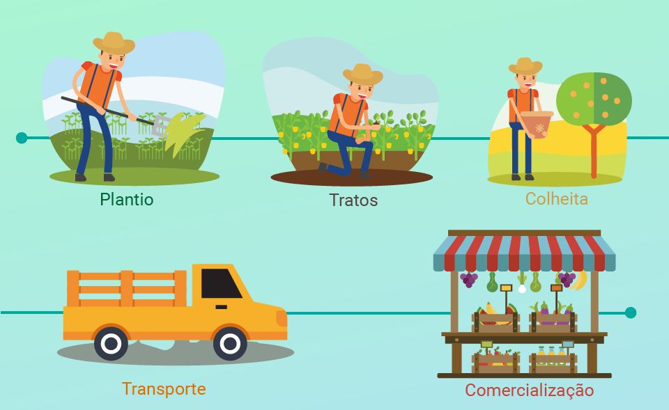

Unindo saberes por meio da tecnologia
A conexão entre o campo e a cidade é fundamental para o desenvolvimento equilibrado da sociedade. O campo é responsável pela produção de alimentos, matérias-primas e recursos naturais, enquanto a cidade concentra os serviços, a indústria, a tecnologia e os mercados consumidores. Quando há uma boa integração entre esses dois espaços, ocorre o fortalecimento da economia, a valorização da agricultura familiar, o escoamento eficiente da produção e o acesso a bens e serviços de qualidade para todos. Além disso, essa relação favorece a sustentabilidade, a troca de conhecimentos e o respeito às diferentes formas de vida e cultura.
Porém, entre tantos pontos positivos, celebraremos como a tecnologia pode unir mundos diferentes, do campo à cidade, da tradição à inovação, a tecnologia fortalece conexões humanas, produtivas e culturais.
